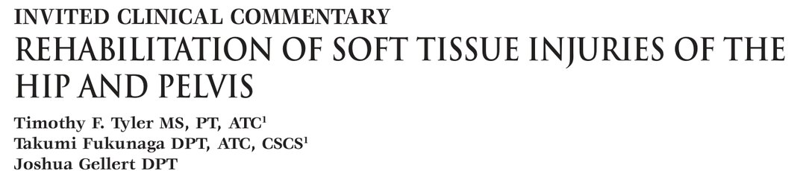
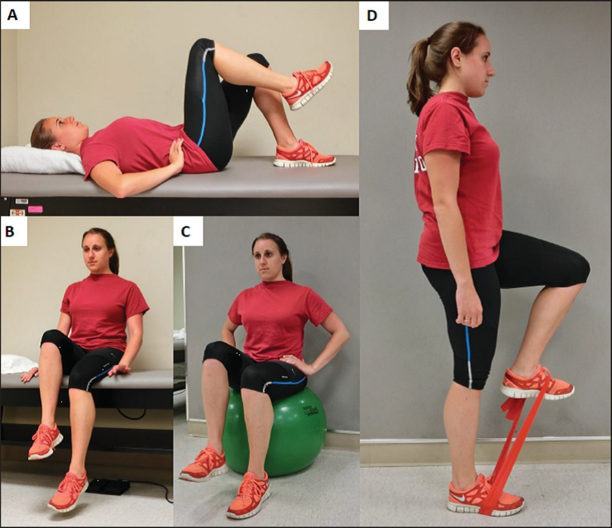
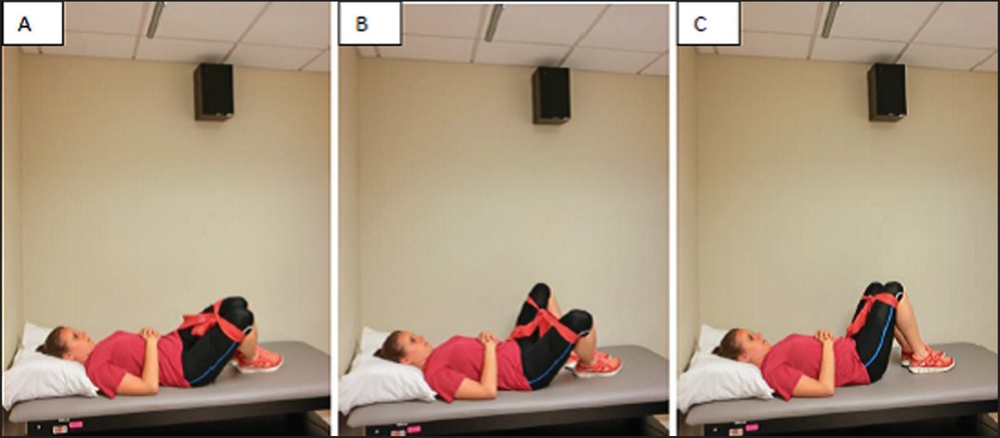
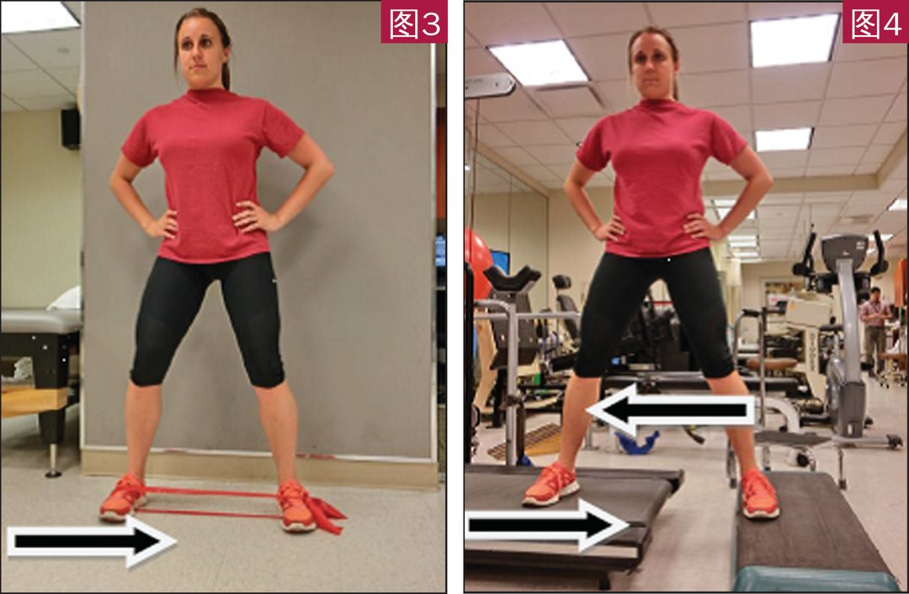

🔖原文首页（IJSPT 2014 年第 9 卷第 6 期）
📚 文献卡片
▪ 英文原题：Rehabilitation of Soft Tissue Injuries of the Hip and Pelvis（髋与骨盆软组织损伤的康复）
▪ 作者：Timothy F. Tyler, MS, PT, ATC · Takumi Fukunaga, DPT, ATC, CSCS · Joshua Gellert, DPT
▪ 机构：Nicholas 运动医学与运动创伤研究所（NISMAT），Lenox Hill 医院，纽约
▪ 期刊：International Journal of Sports Physical Therapy（IJSPT）
▪ 年卷期：2014;9(6):785-797
▪ PMCID：PMC4223288
▪ 文章类型：特邀临床评论（Invited Clinical Commentary）
▪ 证据级别：5 级
▪ 关键词：adductor strain · gluteal tendinopathy · hip · iliopsoas syndrome · pelvis
髋部解剖复杂，多种病变常同时存在、症状相似，很多系统都能把疼痛牵涉到骨盆。常见组合是屈髋肌拉伤 + 内收肌拉伤 + “运动疝”。需要通过详细病史和查体，与运动性耻骨痛、耻骨炎、疝、髋关节骨关节炎、直肠或睾丸牵涉痛、梨状肌综合征以及骨盆/下肢骨折相鉴别。
本文聚焦三种常见软组织损伤：内收肌拉伤、髂腰肌综合征、臀肌腱病，介绍以功能损害为导向、按阶段推进的评估和治疗。
肌肉拉伤的通用处理：轻中度拉伤以 RICE（休息、冰敷、加压、抬高）为标准；轻柔冰按摩消肿；压缩短裤或弹力绷带支撑；行走疼痛时，伤后一两天可部分负重或使用助行器。
| 损伤 | 关键点 | 康复核心 |
|---|---|---|
| 内收肌拉伤 | 冰球、足球最多见；内收/外展力量比 <80% 风险高；复发率高 | 预防性内收肌强化；伤后三阶段，强调离心抗阻 |
| 髂腰肌综合征 | 前髋痛，常伴弹响髋；舞者、跑者、足球运动员、橄榄球前锋高发 | 核心激活（腹部回缩）+ 屈髋渐进训练 |
| 臀肌腱病 | 大转子外侧痛，常伴转子滑囊炎；“髋的肩袖” | 先止痛，再离心训练；三阶段推进 |
一句话概括：找出危险因素、评估整条动力链，再按功能损害一步步推进。
• 内收肌群在开链中内收大腿，在闭链中稳定下肢对抗各方向的扰动，并辅助屈髋和旋转
• 长收肌被认为最常受伤，可能与其起止点的力学劣势有关
• 瑞典精英冰球运动员中，腹股沟拉伤占全部损伤的 10%；芬兰精英冰球运动员中占全部肌肉拉伤的 43%
• NHL 单支球队：3.2 次 / 1000 人次比赛暴露；26 支 NHL 球队 1991～1997 年发生率上升，季前赛最高
• 斯堪的纳维亚足球研究：每 100 名球员 10～18 次；Ekstrand 发现 180 名男足一年 32 次，占全部损伤 13%
| 因素 | 证据 |
|---|---|
| 柔韧性 | 足球：受伤者季前髋外展活动度较小（Ekstrand）；冰球：外展活动度与拉伤无关 |
| 内收肌力量 | NHL 受伤者季前内收力量低 18% |
| 内收/外展力量比 | 未受伤者 95%，受伤者仅 78%；受伤侧 70%，未受伤侧 86% |
| 休赛期训练 | 休赛期坚持训练者和新秀受伤较少（Emery）；但该研究未发现内收肌峰力矩与拉伤相关（多名测试者、手持测力计，误差较大） |
| 既往拉伤 | 9 次拉伤中 4 次（44%）为复发；澳式足球复发率 32% |
2000、2001 赛季前，58 名职业冰球运动员中 33 人内收/外展力量比 <80%，被列为高风险，接受强化干预（表 1）。
| 时期 | 内收肌拉伤次数 | 发生率（/1000 人次比赛暴露） | 占全部损伤 |
|---|---|---|---|
| 干预前两季 | 11 | 3.2 | 约 8% |
| 干预后两季 | 3（均在比赛中） | 0.71 | 约 2% |
3 名受伤球员此前都没有同侧拉伤史。
表 1 内收肌拉伤预防方案
| 类别 | 内容 |
|---|---|
| 热身 | • 功率车 • 内收肌拉伸 • 相扑深蹲 • 侧弓步 • 跪姿骨盆倾斜 |
| 强化 | • 夹球（屈膝 → 伸膝；不同大小的球） • 抗重力负重向心内收 • 站立拉索或弹力带内收 • 坐姿内收器械 • 患侧脚踩滑板在矢状面滑动 • 双脚踩滑板在冠状面同时内收 • 单侧弓步配合交替摆臂 |
| 专项 | • 冰上跪姿内收对拉 • 站立拉索抗阻跨步（模拟滑冰） • 滑板滑冰 • 拉索交叉下拉 |
| 临床目标 | 内收力量至少达到外展力量的 80% |
复发率高可能与康复不彻底或组织修复时间不足有关。Hölmich 发现，按摩、拉伸、理疗等被动治疗对慢性腹股沟拉伤无效；而 8～12 周主动强化方案（渐进抗阻内收外展、平衡训练、腹肌强化、滑板滑冰动作）更有效。
表 2 内收肌拉伤伤后康复方案
| 第一阶段 急性期 | |
| 内容 | • 伤后约 48 小时 RICE • 非甾体抗炎药 • 按摩 • 经皮神经电刺激（TENS） • 超声 • 无痛下次最大等长内收：屈膝 → 伸膝，逐步到最大等长内收 • 无痛范围内髋被动活动 • 非负重髋渐进抗阻练习，抗重力体位不加负荷（外展除外），无痛、低负荷、多次数 • 上肢和躯干强化 • 对侧下肢强化 • 非受累肌肉柔韧性训练 • 双侧平衡板 |
| 进阶标准 | 抗重力向心内收无痛 |
| 第二阶段 亚急性期 | |
| 内容 | • 骑车 / 游泳 • 相扑深蹲 • 单腿站立 • 负重抗重力向心内收 • 患侧脚踩滑板在冠状面滑动 • 站立拉索或弹力带内收 • 坐姿内收器械 • 双脚踩滑板冠状面同时内收 • 矢状面单侧弓步配合交替摆臂 • 多平面躯干倾斜 • 平衡板深蹲加抛接回弹 • 全身柔韧性训练 |
| 进阶标准 | 患侧下肢被动活动度与健侧相同，患侧内收力量至少为同侧外展的 75% |
| 第三阶段 专项训练 | |
| 内容 | • 第二阶段练习增加负荷、强度、速度和量 • 站立拉索抗阻跨步模拟滑冰 • 滑板 • 冰上跪姿内收对拉 • 各平面弓步 • 纠正或调整滑冰技术 |
| 回归标准 | 内收力量至少为外展的 90%～100%，且患侧力量与对侧相同 |
前髋痛很难判断来源，需与盂唇撕裂、股骨髋臼撞击、骨关节炎等关节内病变鉴别。疼痛可来自髂腰肌腱或髂耻滑囊（人体最大的滑膜囊）。髂腰肌腱在骨性突起上或在自身肌腹内滑过、发出“啪”声，称为内侧弹响髋。髂腰肌腱病、髂耻滑囊炎和内侧弹响髋统称髂腰肌综合征；但髂腰肌也可以不伴弹响而引起前髋痛。
• 病因：原发多为过度使用；继发可见于全髋置换术后、类风湿关节炎或骨关节炎
• 高危人群：舞者、跑者、足球运动员、橄榄球进攻锋线；精英芭蕾舞者内侧弹响髋患病率 91%，其中 58% 伴疼痛
• 功能：髂腰肌是唯一直接连接脊柱和下肢的肌肉；以Ⅰ型（慢肌）纤维为主，是重要的姿势肌，参与行走、跑步、坐、躯干侧屈、对侧手提物、仰卧起坐等
| 环节 | 内容 |
|---|---|
| 病史 | 症状性质与部位、诱因、加重/缓解动作或姿势、运动史、合并或既往损伤；一项研究中 45% 的舞者伴同侧腰痛 |
| 姿势与动作观察 | 站、坐、仰卧的腰盆姿势；行走、跑、蹲、踮脚站，注意髋和脊柱的相对贡献 |
| 活动度 | 髋和躯干各平面活动度，注意不对称；髋撞击试验排除关节内病变 |
| 弹响检查 | 髋从屈曲-外展-外旋被动移到伸展-内收-内旋；可用动态超声观察 |
| Thomas 试验 | 评估屈髋肌柔韧性；但部分患者 Thomas 试验并不阳性 |
| 肌力 | 各平面徒手肌力测试，手持测力计更可靠；外旋位抗阻屈髋被认为是特异性检查 |
| 核心 | 等长耐力测试评估姿势稳定性 |
• 调整活动：避免诱发动作；用骑车、椭圆机或水中运动保持心肺功能；跑者可通过调整步频减少关节活动幅度和能量吸收
• 急性疼痛：冷疗、加压、感觉电刺激
• 柔韧性：屈髋肌拉伸、治疗师辅助拉伸（可配合 PNF）、髂腰肌肌筋膜扳机点手法放松；作者经验中常见扳机点在髂前上棘内侧、髂嵴下方；每天自我拉伸
• 核心激活：仰卧位开始，可用压力生物反馈学习中立位腹部回缩（drawing-in），这是后续所有练习的基础
屈髋渐进训练（全程保持腹部回缩、腰椎中立）：
仰卧短力臂屈髋 → 仰卧直腿抬高 → 床边坐位屈髋 → 瑞士球上坐位屈髋 → 靠墙站立屈髋 → 无支撑站立屈髋 → 泡沫垫上站立屈髋；可用沙袋、弹力带或拉索增加阻力。治疗师要观察骨盆是否过度倾斜、腰椎前凸是否不足。

🔖图1：髂腰肌综合征的屈髋渐进训练（全程同时做腹部回缩、腰椎保持中立）。A 仰卧短力臂屈髋；B 坐位屈髋；C 瑞士球上坐位屈髋；D 弹力带抗阻站立屈髋
• 髋旋转、外展、伸展的不足按“躺 → 坐 → 站”同样进阶；Johnston 等：跑者做 3 个月侧卧、坐位、站立的髋旋转强化，活动水平改善并回归运动，13 个月随访仍维持
• 加入前桥、侧桥、四点跪等核心训练，并在日常活动中强调核心激活
• 回归标准：无症状完成屈髋渐进训练，骨盆和下肢姿势与协调良好
• 难治病例：超声引导麻醉剂/激素注射、内镜下松解或延长；但多数患者保守治疗有效
运动专项需求超过动力链可用的生理活动范围时，髋部肌肉受力过大。例如棒球投手或击球手的前侧髋要在三个平面上对抗巨大力量。过度使用加上臀中肌和臀小肌无力，可导致拉伤、撕裂或退变，即臀肌腱病：大转子外侧疼痛，常伴大转子滑囊炎。
| 结构 | 解剖与功能 |
|---|---|
| 臀中肌 | 起于髂骨背面、髂嵴下方，止于大转子外侧面和后上面（外侧面附着面积更大）；主要外展髋，前束内旋、后束外旋；负重时防止骨盆下沉 |
| 臀小肌 | 起于髂骨背面、臀前/下线及坐骨大切迹边缘，止于大转子前面；外展、内旋髋 |
| 滑囊 | 髋部平均约 6 个滑囊；臀中肌腱深面有前、后臀中肌下滑囊，臀小肌腱深面有臀小肌下滑囊 |
| “髋的肩袖” | Bunker 首次提出：臀肌起点宽、止点为扁平腱，臀中肌前 1/3 和臀小肌腱在大转子止点处可撕裂；和肩袖一样可分为止点处、部分层或全层撕裂 |
• 症状：髋外侧钝痛、酸痛，负重和抗阻外展时加重
• 压痛位置：大转子后方压痛提示臀中肌，前方压痛提示臀小肌；收缩试验有助于区分肌腱与滑囊病变，直接触诊更有助于确诊
• 全面检查：病史、视诊、触诊、活动度、稳定性、各平面肌力；近端（骶髂关节、腰椎、核心）和远端（膝、踝、足）也要查；步态注意腿长差、无力代偿、足跟着地和回避模式
| 检查 | 方法 | 阳性 |
|---|---|---|
| Trendelenburg 试验 | 单腿站立 | 骨盆向非支撑侧下沉，提示支撑侧外展肌无力 |
| Ober 试验 | 健侧卧，患侧屈膝屈髋后外展、后伸，使髂胫束位于大转子上方，再被动内收 | 两侧有差异 |
| Thomas 试验 | 仰卧，健侧抱膝，患侧伸直 | 患侧大腿离开床面 |
| Ely 试验 | 俯卧，被动屈膝使足跟靠近臀部 | 不抬臀无法触及（股直肌紧张） |
| FABER 试验 | 屈曲-外展-外旋 | 诱发疼痛 |
| 抗阻外旋复位试验 | 仰卧屈髋 90°，外旋到末端（或疼痛点），再抗阻主动回到中立 | 复现疼痛 |
| 单腿站立 30 秒 | 检查者轻扶双手，限制躯干侧摆 | 复现疼痛 |
Lequesne 等报道（仅 17 例）：抗阻外旋复位试验和 30 秒单腿站立的敏感度分别为 100% 和 88%，特异度均为 97.3%，但未报告可重复性。Bird 等则发现抗阻外展（敏感度 72.7%）和抗阻内旋（54.5%）准确性较差。怀疑撕脱时，MRI 或超声尤为重要。
与其他肌腱病相同：先减轻疼痛和功能障碍，再进阶到离心训练。离心训练治疗跟腱、髌腱和网球肘有充分证据，理论上也可用于臀肌腱病，但目前尚无研究证实其对臀肌腱病的益处，也没有臀中/小肌离心练习的肌电研究。
表 3 臀肌腱病康复方案
| 第一阶段 急性期 | |
| 内容 | • 外伤所致者伤后约 48 小时 RICE • 按摩、非甾体抗炎药、TENS、超声 • 无痛臀肌拉伸（膝靠向对侧肩）和被动活动 • 非负重髋渐进抗阻（不加负荷） • 次最大等长收缩 → 最大等长收缩 • 治疗师抗阻伸膝、伸髋 • 膈式呼吸 • 核心稳定练习（骨盆倾斜等） • 上肢、躯干、对侧下肢强化 • 非受累肌肉柔韧性训练 • 双侧平衡板 |
| 进阶标准 | 抗重力向心外展无痛 |
| 第二阶段 亚急性期 | |
| 内容 | • 骑车 / 椭圆机 / 登梯机 / 游泳 • 非负重髋渐进抗阻（加负荷） • 桥式（双腿 → 单腿） • 四点跪伸髋、消防栓式 • 前桥、侧桥 • 弹力带或拉索负重髋抗阻（向心 → 离心） • 弹力带深蹲、侧向走 • 单腿站立、下台阶、弓步配合交替摆臂 • 离心短力臂外旋外倒 • 平衡板深蹲加抛接回弹 • 全身柔韧性训练 |
| 进阶标准 | 能无痛完成短力臂离心训练 |
| 第三阶段 专项训练 | |
| 内容 | • 第二阶段练习增加负荷、强度、速度和量 • 平板进阶：俯卧平板 + 伸髋，侧桥 + 外展加外旋 • 站立拉索抗阻跨步 • 滑板 • 各平面弓步，逐步增加平衡挑战（泡沫垫 → BOSU） • 渐进平衡练习 • 站立髋外旋 → 站立髋外旋 + 弹力带单腿深蹲 • 离心训练：站立弹力带离心、跑步机抗阻、上台阶加离心 • 专项增强式训练 • 纠正或调整专项动作 |
| 回归标准 | 专项活动无痛 |
离心训练示例：
• 短力臂仰卧外旋外倒（图 2）：向患侧翻身，健侧外旋外倒，使患侧受负荷，再缓慢对抗弹力带回到起始位
• 站立离心外展（图 3）：弹力圈套住双脚，向健侧跨步、患侧受负荷，再缓慢回到起始位
• 跑步机离心（图 4）：腿从外展位回到内收位时对抗跑步带的运动

🔖图2：短力臂仰卧外旋外倒。A 躯干向侧方旋转；B 负荷位；C 起始/结束位

🔖图3（左）：站立离心髋外展练习；图4（右）：跑步机离心抗阻（原文未给出图注，据正文补充）
保守治疗失败时，可考虑激素注射等，以及关节镜滑囊切除、肌腱修复、截骨、内镜下臀中肌撕裂修复。
• 证据级别低：5 级特邀临床评论，三套康复方案主要基于作者团队的临床经验；作者自己也说伤后内收肌方案“从经验上看似乎有效”
• 预防研究的局限：冰球预防研究是干预前后比较，没有随机对照组，且样本来自一支球队；危险因素研究之间结论也不一致（如柔韧性、峰力矩）
• 臀肌腱病的离心训练：目前没有研究证实其疗效，只是从其他肌腱病类推
• 诊断试验证据薄弱：Lequesne 的两项试验样本仅 17 例，且未报告可重复性
• 小瑕疵：原文图 4 没有图注；表 3 第二阶段标准写成“pain free … pain free”重复；“electromyographi”等拼写错误
• 优点：三种损伤各给出了清晰的阶段方案和量化的进阶标准（如内收/外展力量比 75% → 90%～100%）
① 内收肌：内收/外展力量比 <80% 是高风险；预防强化可把发生率从 3.2 降到 0.71 / 1000 人次
② 内收肌康复：等长无痛 → 抗重力向心 → 力量比 75% → 90%～100% 回归
③ 髂腰肌：腹部回缩为基础，屈髋从仰卧短力臂进阶到泡沫垫上站立
④ 臀肌腱病：“髋的肩袖”；后方压痛臀中肌、前方压痛臀小肌
⑤ 臀肌康复：先止痛和等长，再短力臂离心，最后专项和增强式
⑥ 共同原则：被动治疗不够，主动强化和离心训练才是关键
欢迎关注骨科康复小黄公众号，获取更多物理治疗的专业知识！
📄参考文献：
Tyler TF, Fukunaga T, Gellert J. Rehabilitation of Soft Tissue Injuries of the Hip and Pelvis. Int J Sports Phys Ther. 2014;9(6):785-797. PMCID: PMC4223288.
文中图片均来自原文（图中仅有 A～D 字母和箭头），表 1～3 已译为中文，仅用于学术交流。